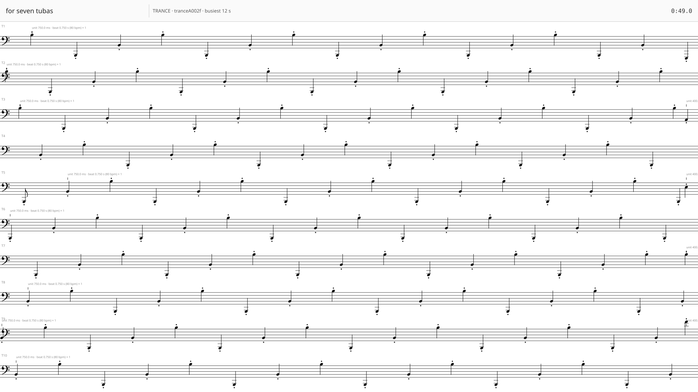
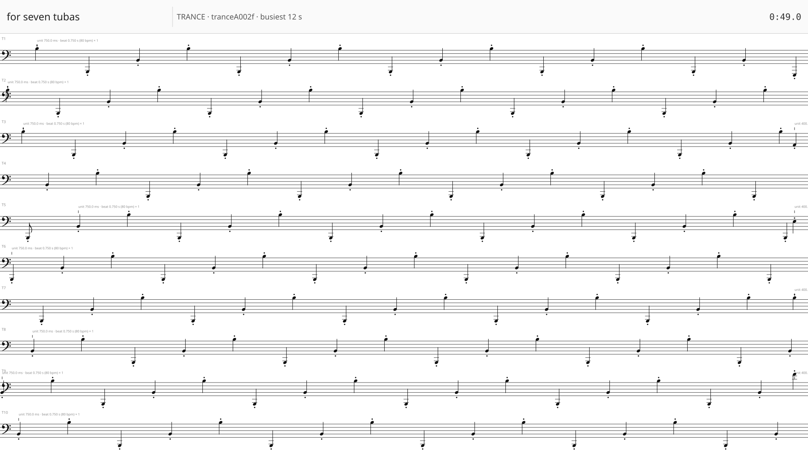
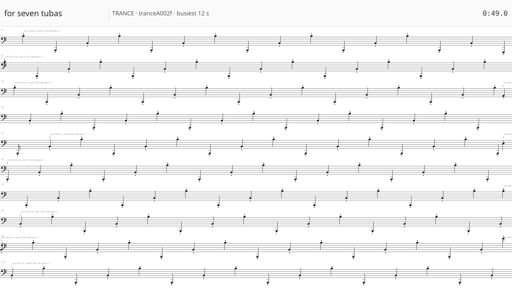
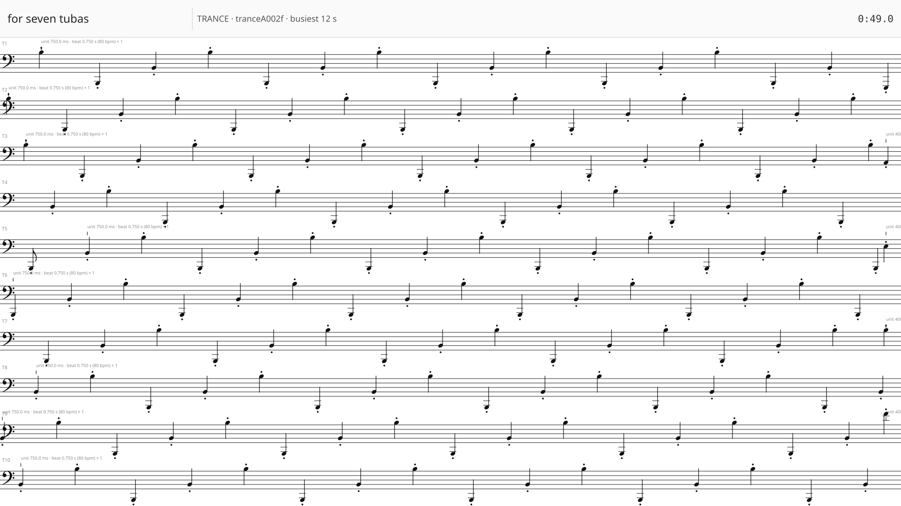
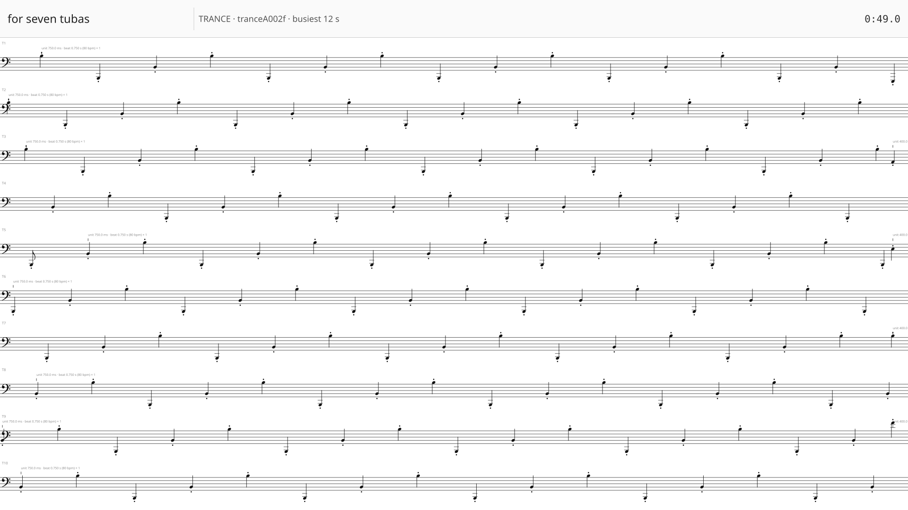
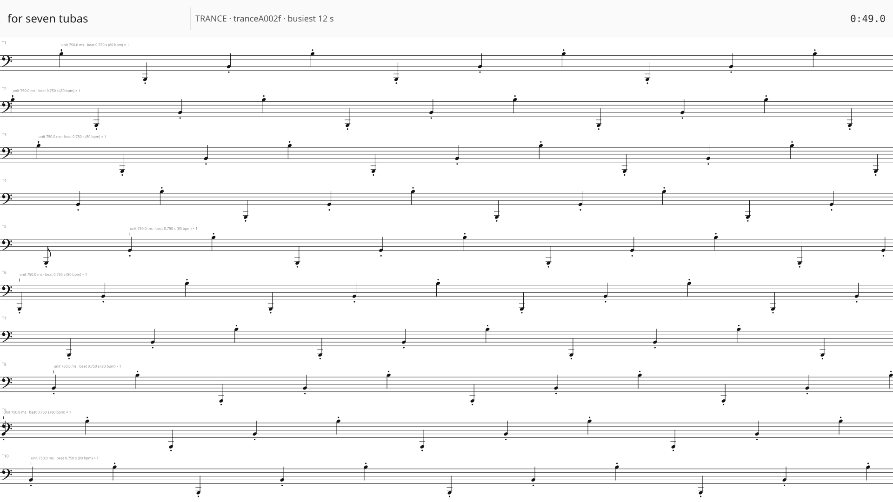
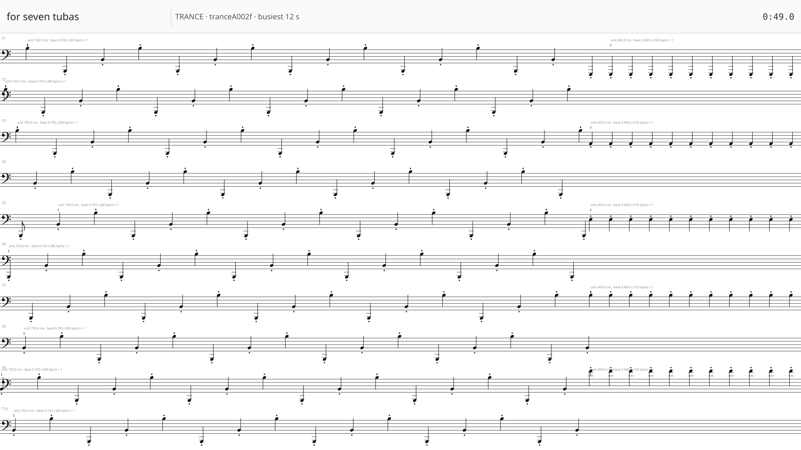
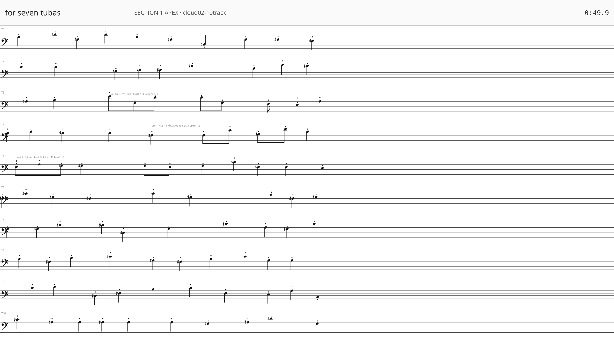
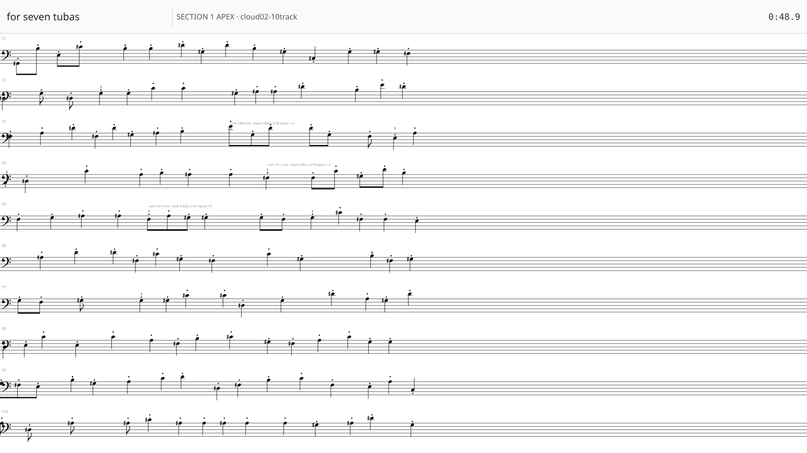
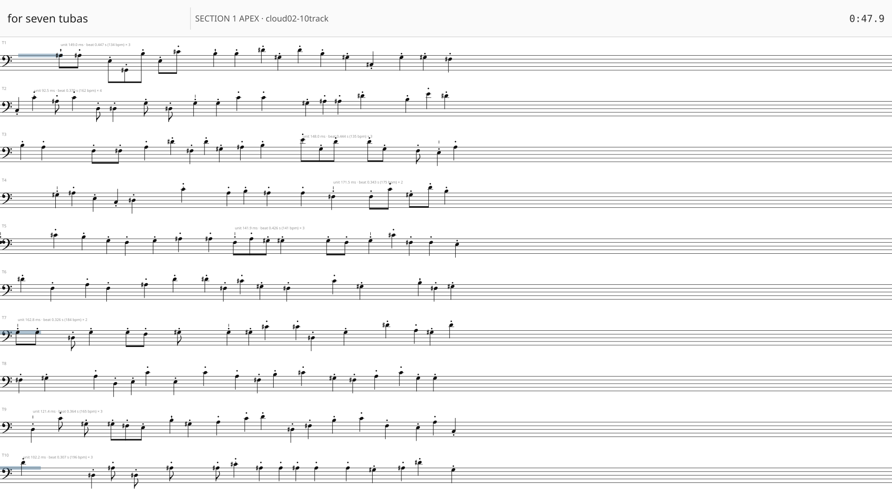

View at 100% browser zoom (CTRL+0). Each frame is exactly 1920×1080 — the shipped video size. Keys: J/K next/prev.
1/12 — A: header 60px · ss/system 12 · 12 s/system · trance lane 96.8px · staff 32.3px · 160px/s

2/12 — A: header 80px · ss/system 12 · 12 s/system · trance lane 94.8px · staff 31.6px · 160px/s

3/12 — A: header 100px · ss/system 12 · 12 s/system · trance lane 92.8px · staff 30.9px · 160px/s

4/12 — B: ss/system 10 · header 80 · 12 s/system · trance lane 94.8px · staff 37.9px · 160px/s

5/12 — B: ss/system 12 · header 80 · 12 s/system · trance lane 94.8px · staff 31.6px · 160px/s
6/12 — B: ss/system 14 · header 80 · 12 s/system · trance lane 94.8px · staff 27.1px · 160px/s

7/12 — C: 8 s/system (240 px/s) · trance lane 94.8px · staff 31.6px · 240px/s

8/12 — C: 12 s/system (160 px/s) · trance lane 94.8px · staff 31.6px · 160px/s
9/12 — C: 16 s/system (120 px/s) · trance lane 94.8px · staff 31.6px · 120px/s

10/12 — D: 4 s/system (480 px/s) · density apex lane 94.8px · staff 31.6px · 480px/s

11/12 — D: 6 s/system (320 px/s) · density apex lane 94.8px · staff 31.6px · 320px/s

12/12 — D: 8 s/system (240 px/s) · density apex lane 94.8px · staff 31.6px · 240px/s
